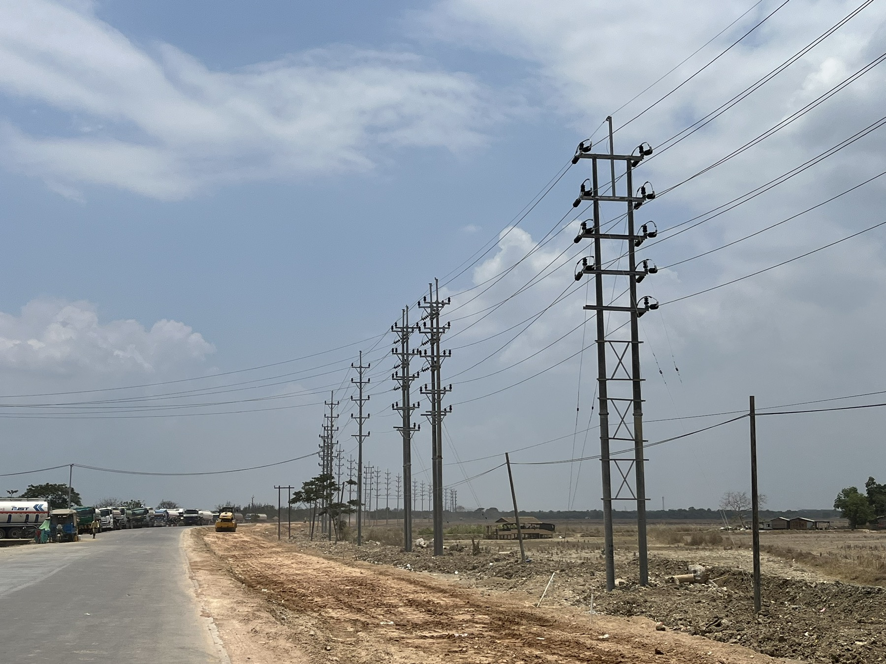

Electrical power systems
33/11 kV distribution, transformers, overhead lines, street lighting, single-line diagrams, load calculations, and protection documentation.
ELECTRICAL PROJECT ENGINEER · PMP® CERTIFIED
I coordinate electrical power distribution and infrastructure projects from planning and tendering through site execution, testing, commissioning, and handover.
CORE STRENGTHS
Technical capability and structured project delivery, built through hands-on infrastructure work.
33/11 kV distribution, transformers, overhead lines, street lighting, single-line diagrams, load calculations, and protection documentation.
Scope, schedule, procurement, tendering, contractor coordination, risk and quality tracking, HSE, commissioning, and handover.
Coordinate clients, utility stakeholders, vendors, subcontractors, and multidisciplinary teams to keep site work progressing safely.
SELECTED CASE STUDIES

33 kV · 11 km LINE RELOCATIONFEATURED PROJECT / 02
Tendering, bid analysis, outage planning, and utility interface coordination for a triple-circuit overhead line along a road reconstruction corridor.
View project details ↗Field images illustrate related equipment and work settings; they are not claimed as photographs from a specific case-study site.
CONNECT WITH ME
Electrical engineering, power distribution, and project delivery opportunities across Singapore, Malaysia, and Thailand.
Contact details ↗